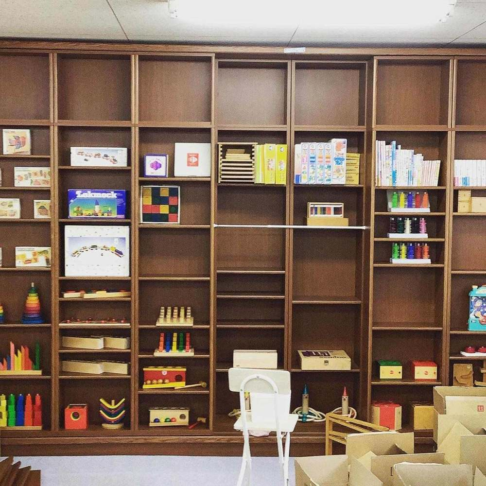
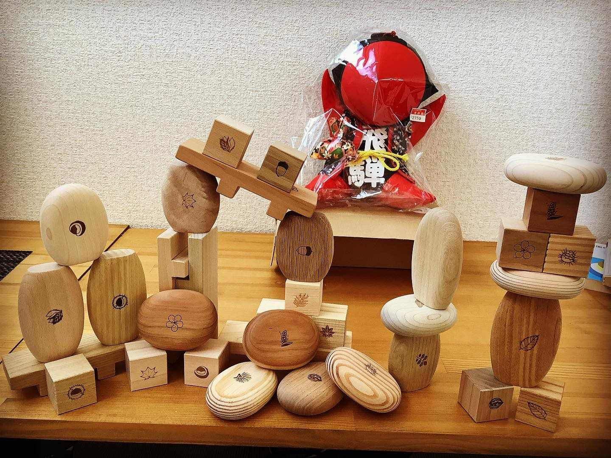
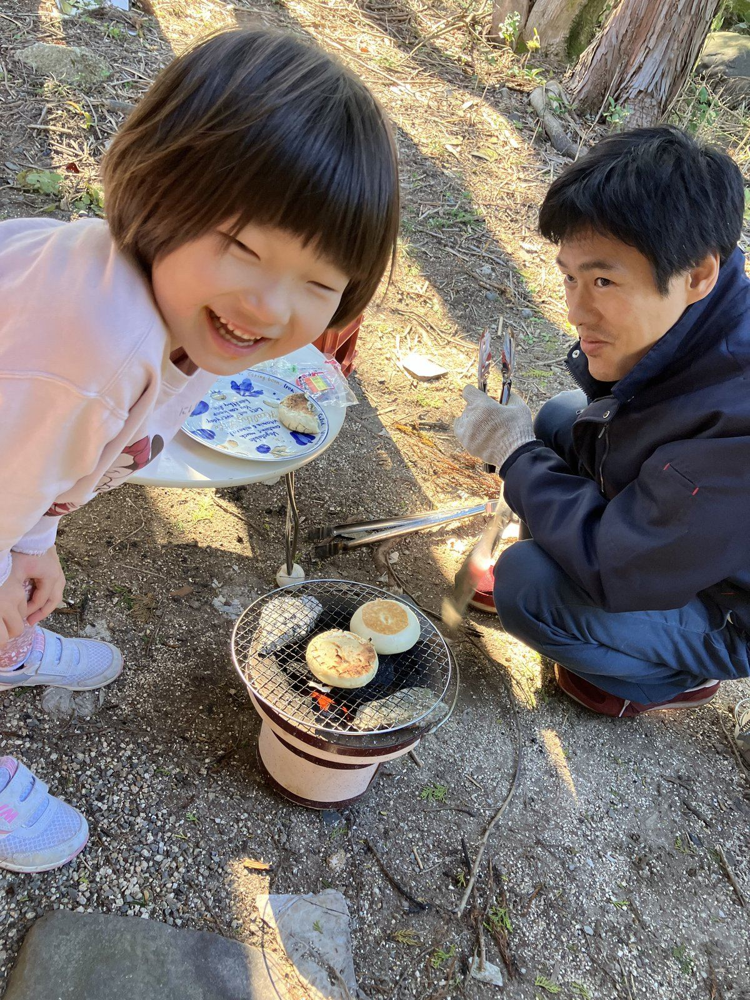
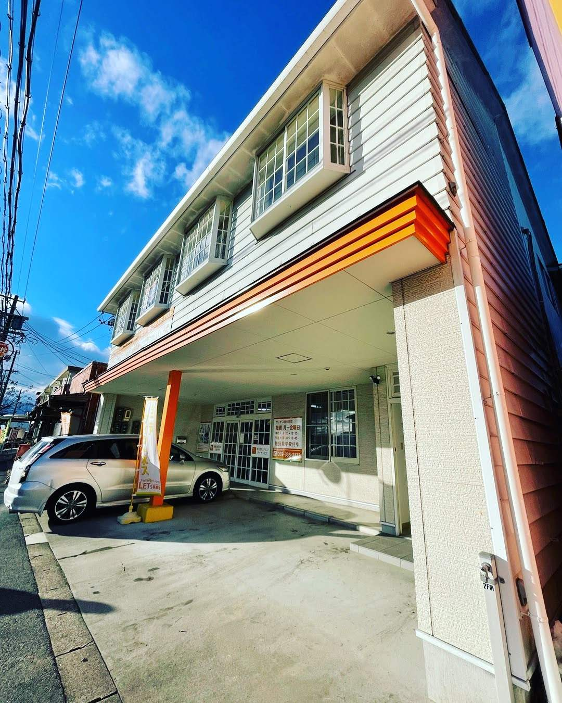

星心会
相談する星心会
相談する
星心会
相談する星心会
相談するLEO
おもちゃ、武道、庭いじりで整えます。
体を動かし、手を動かします。
情緒は、遊びの中で整えます。
たくさんのおもちゃの中から、自分の好きなものを見つけたり、一緒に少し難しいものにもチャレンジしたりします。（「認知・行動」「言語・コミュニケーション」「人間関係・社会性」）

武道やヨガ、農作業を通じて心身を鍛えます（「健康・生活」「運動・感覚」）。格闘家や農家さんのところへ行き地域連携を行なっています。

菰野町のフィールドにお出かけして、遊びながら自然観察をしたり、七輪で火を起こしをしたりします。

※経験豊富な加藤が当事業所の研修講師も担当し、職員の質の向上に取り組んでいます。
建物の２階です。看板のあるドアからお入りください。

CONTACT